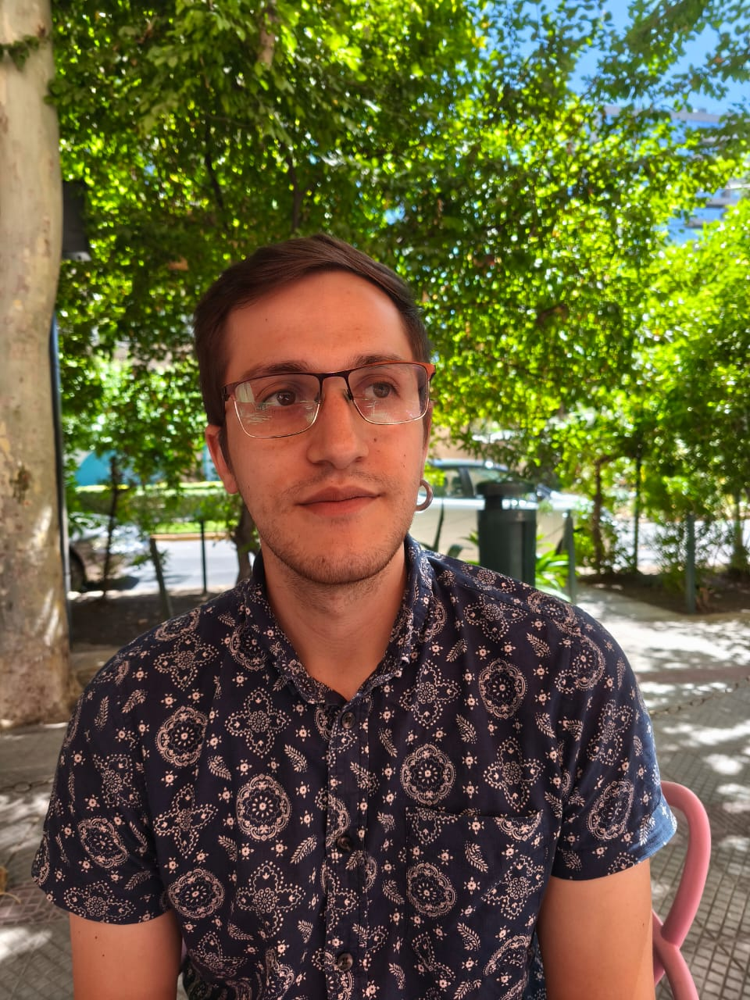
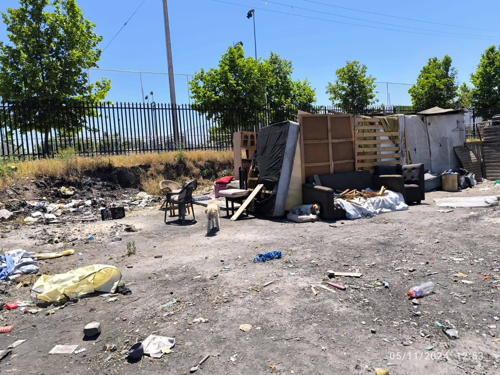

Antropólogo (PUC) especializado en métodos mixtos: etnografía, análisis de datos en R/Python y automatización con IA. Transformo investigación social en instrumentos para la toma de decisiones.
Me interesan las preguntas que empiezan en las personas: por qué alguien prefiere dormir a la intemperie antes que entrar a un albergue, por qué una encuesta miente donde una conversación dice la verdad, por qué una buena política fracasa al llegar al territorio. La antropología me dio las herramientas para escuchar esas preguntas; los datos y la tecnología, las de responderlas. Trabajo para que esa evidencia llegue viva a quienes toman las decisiones.
“Me interesa la investigación que deja de ser un informe archivado y se convierte en una decisión mejor informada.”
Casos de investigación social aplicada: evaluación y monitoreo de programas, diagnósticos territoriales y productos de datos para la toma de decisiones.

Investigación etnográfica sobre los factores que influyen en la permanencia en calle y en el rechazo a los dispositivos municipales de apoyo. Seis hallazgos accionables y oportunidades de diseño para una intervención centrada en la autonomía.
Ver caso completoDashboard interactivo que cruza el Censo 2024 de personas en situación de calle con el índice de vulnerabilidad socioterritorial (SIVUST) por unidad vecinal, e interpreta los datos a la luz de la evidencia etnográfica.
¿Te interesa colaborar o tienes preguntas sobre algún proyecto? Escríbeme por mis canales profesionales:
La vía más directa para propuestas de trabajo y colaboración:
Enviar mensaje por LinkedInPara consultas sobre código, análisis de datos o colaboraciones técnicas:
Ver mis proyectos en GitHub